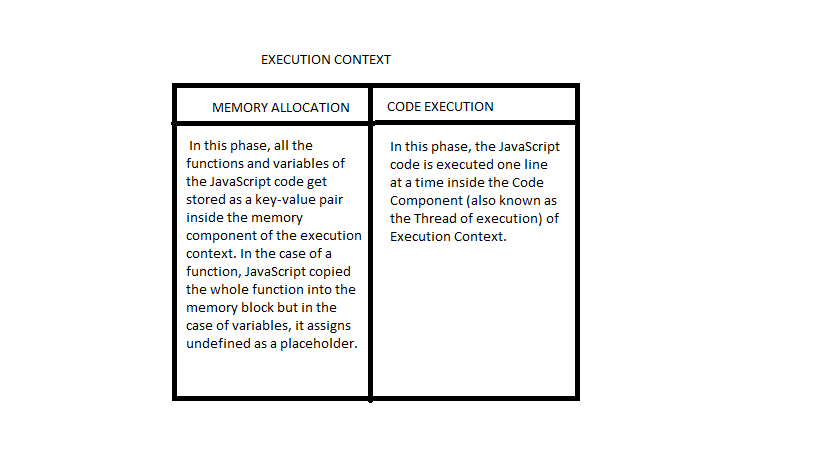

25 th topics
i. Introduction to JavaScript.
ii.How javascript works and execution context.
iii.How javascript code is executed & call stack.
iv. JS ENGINE (Google v8 architecture).
- INTRODUCTION TO JAVASCRIPT🌞
:Java script is a single threaded synchronized intrepreter language
-
HOW JAVASCRIPT WORKS AND EXECUTION CONTEXT:
Java script can be added to html file in three ways:
→inside a head tag.
→inside a body tag.
→by creating an file with .js extension and added to html file by using link tag.
EXECUTION CONTEXT:
Execution contest is a big container consists of two columns they are "memory allocation" and "code execution"
→ the column memory allocation contains called as
→the column code execution contains called as
-
HOW JAVASCRIPT CODE IS EXECUTED AND CALL STACK:

CALL STACK:call stack used to execute more functions inside a single function.
When a program starts execution JavaScript pushes the whole program as global context into a stack which is known as Call Stack
and continues execution. Whenever JavaScript executes a new context and just follows the same process and pushes to the stack.
When the context finishes, JavaScript just pops the top of the stack accordingly.
When JavaScript completes the execution of the entire code, the Global Execution Context gets deleted and popped out from the Call Stack making the Call stack empty.
-
JS ENGINE:
for chrome: v8 engine
for firefox: spider monkey
for internet explorer: chakra
26 th topics🎈
i.let vs const vs var
ii.Hoisting in Javascript
iii.undefined vs not defined in javascript, strict mode
-
data types:
Numbers
Strings
Objects
Arrays
Functions
-
let:have block scope.
var:does not have block scope.
const: which can be constant we can use only once.
-
hoisting in javascript:
In JavaScript, Hoisting is the default behavior of moving all the declarations at the top of the scope before code execution.
Basically, it gives us an advantage that no matter where functions and variables are declared
they are moved to the top of their scope regardless of whether their scope is global or local
-
strict mode:
"use strict"
three types of errors: reference error,syntax error,type error.